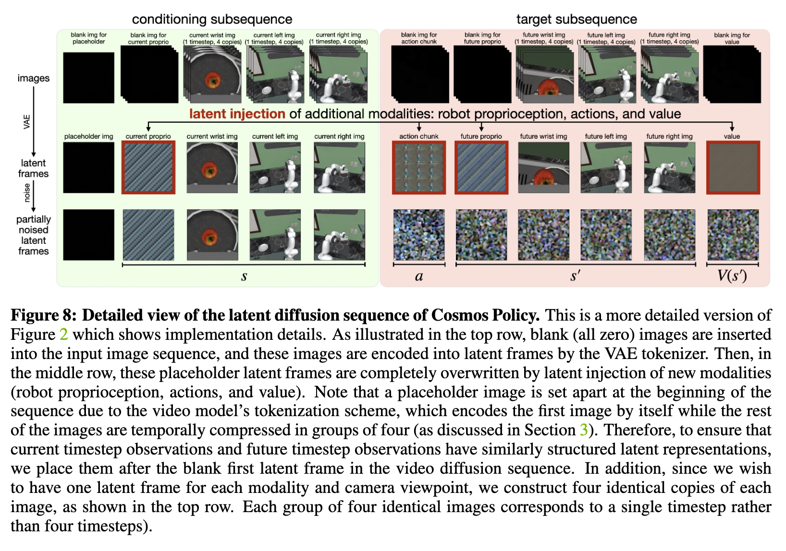

World Model 04
Cosmos Policy：动作作为隐帧
单骨干路线的关键想法是：不要在视频模型外面再搭一堆动作模块， 而是把动作、未来图像、未来状态和值函数都编码进同一个视频 latent diffusion 过程。
动作也是一种 latent frame
Cosmos Policy 基于 Cosmos-Predict2-2B，把动作展平后复制到视频 latent 的空间形状中， 让预训练视频模型用熟悉的 latent diffusion 机制直接生成动作。论文强调这不需要改架构， 主要通过目标机器人数据上的单阶段 post-training 完成适配。

代码视角
真正有用的抽象不是“视频模型加动作头”，而是把不同监督目标统一成同一种 latent token。 这样 Best-of-N planning 也能直接在同一模型里做候选动作采样和 value 排序。
obs_latent = video_vae.encode(obs_images)
action_latent = tile(project(action_seq), spatial_shape=obs_latent.shape[-2:])
state_latent = project_state(proprio_future)
value_latent = project_value(return_to_go)
tokens = pack_as_video_latents(obs_latent, action_latent, state_latent, value_latent)
loss = diffusion_denoising_loss(model(tokens, text, timestep), target=tokens)
def plan(obs, text, n=32):
samples = [model.sample(obs, text) for _ in range(n)]
return max(samples, key=lambda x: x.predicted_value).action实现重点
- 动作的尺度和空间复制方式要稳定，否则 action latent 会被视频 latent 的统计量淹没。
- 规划模式需要多次采样并打分，效果强但延迟高，原笔记里记录的 planning 约 5 秒一次就是这个问题。
- 高噪声段训练权重很关键，因为动作生成要从强噪声中恢复精确控制，而不只是恢复视觉纹理。
Insight
Cosmos Policy 的漂亮之处是“接口统一”：动作不再是视频模型之外的附属模块，而是未来的一部分。 它的工程代价也清楚：如果每次动作都要走大视频骨干，闭环频率会先成为瓶颈。